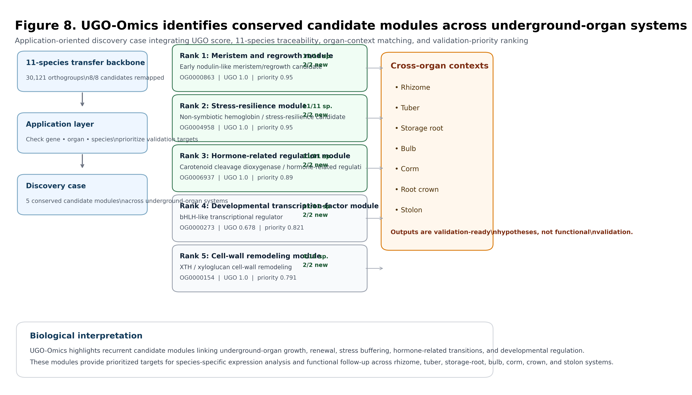

Known-gene Anchors
Connect UGO candidate modules to recognizable developmental, hormonal, stress-response, regulatory, cell-wall, and storage-related gene-family anchors.
Download anchor panel
UGO-Omics is designed as a discovery platform rather than a static file collection. It connects underground-organ resources to cross-species modules, phylogenetic interpretation, benchmark-supported discovery, and practical candidate-family prioritization.
Broad resource coverage across rhizomes, tubers, storage roots, corm-like systems, root crowns, and related underground organs.
A curated high-confidence panel for orthogroup transfer, candidate-module analysis, and comparative interpretation.
An independent evolutionary scaffold for interpreting recurrent module signals across phylogenetically divergent species.
Known-category recovery and calibrated candidate-family ranking turn module recurrence into practical hypotheses.
The UGO actionability layer links recurrent underground-organ modules to known-gene anchors, calibrated candidate-family ranking, and species-specific examples for rhizome, tuber, and storage-root systems.
Connects UGO modules to familiar developmental, hormonal, stress-response, regulatory, cell-wall, and storage-related gene families.
Download anchor panelRanks candidate families using module support, species breadth, cross-clade support, benchmark recovery, anchor specificity, and use-case relevance.
Download calibrated rankingPractical examples for Oryza rhizome, Solanum tuber, Manihot storage root, and Beta storage-root/hypocotyl systems.
Download use casesSummarizes how core and supporting UGO modules connect to candidate-family hypotheses and future storage-metabolism expansion.
Download module summaryUGO-Omics is organized around four practical discovery workflows.
Search gene IDs, orthogroups, gene families, or annotations to evaluate module membership and candidate-family support.
Select an underground-organ type to identify enriched candidate modules, biological programs, and prioritized gene-family hypotheses.
Explore candidate modules, homologous members, and transferability patterns within a focal species.
Generate a ranked shortlist of candidate modules and candidate-family hypotheses for downstream functional follow-up.
Choose the entry point that matches your data. UGO-Omics is designed for sequence, gene-list, species, and organ-centered candidate discovery.
Use Sequence-to-UGO to map protein FASTA queries to UGO orthogroups, candidate modules, UGO scores, and validation-priority annotations.
Go to Sequence-to-UGO → Gene listUse Gene-list-to-UGO to map gene lists to prioritized candidate modules and ranked module summaries.
Go to Gene-list-to-UGO → SpeciesUse Resource Finder to retrieve species-centered candidate modules, resource layers, and recommended workflows.
Go to Resource Finder → Organ systemUse Organ Kits to retrieve organ-centered modules, workflows, and validation-focused hypotheses.
Go to Organ Kits →Step 1. Open Demo Results to see example inputs and outputs.
Step 2. Open Resource Finder or Organ Kits to test species- and organ-centered browsing.
Step 3. Open Sequence-to-UGO or Gene-list-to-UGO to see how users can bring their own data into the platform.
Use these demos to quickly verify how UGO-Omics transforms user inputs into candidate modules and validation-priority outputs.
Input: example protein FASTA
Output: sequence-to-UGO result table with orthogroup, candidate module, UGO score, validation-priority class, and suggested validation system.
Input: example DEG/QTL/GWAS-style gene list
Output: matched genes, unmatched genes, and ranked UGO module summary.
Input: species selection
Output: species-centered candidate modules, resource layers, and recommended workflow.
Input: underground-organ type
Output: biological overview, top modules, suggested workflow, and validation focus.
Example research questions that UGO-Omics is designed to support.
Question: I have DEGs from rhizome initiation. Which genes should I prioritize?
Entry point: Gene-list-to-UGO
Output: ranked UGO module summary with UGO scores and validation-priority classes.
Question: Is my tuber candidate part of a conserved underground-organ module?
Entry point: Sequence-to-UGO or Gene-list-to-UGO
Output: orthogroup, candidate module, biological discovery case, and suggested validation system.
Question: What resources and candidate modules are available for my target species?
Entry point: Resource Finder
Output: species-centered resource card and recommended workflow.
Question: Which modules are most relevant to rhizome, tuber, storage root, or root crown biology?
Entry point: Organ Kits
Output: organ-specific candidate modules, workflow, and validation focus.
Question: Which candidates have the strongest support for follow-up validation?
Entry point: Validation Targets and Biological Discovery Case
Output: validation-ready shortlist and conserved module discovery cases.
Map your protein sequence to UGO-Omics orthogroups, candidate modules, UGO scores, biological discovery cases, and validation-priority annotations.
Paste a protein sequence, generate the local command, and inspect an example interpreted output. The browser interface prepares and explains the workflow; the DIAMOND search runs locally or on HPC.
Use protein FASTA. CDS/genomic sequences should be translated before using this workflow.
After pasting your sequence, generate the one-command local/HPC workflow.
Save your pasted sequence as my_query.fa, then run this command inside the Sequence-to-UGO toolkit directory.
Open the demo interpreted output to see what users get back.
| Output | Meaning |
|---|---|
| hit_orthogroup | The UGO orthogroup most similar to the input protein query. |
| candidate_function | The prioritized underground-organ candidate module, if matched. |
| ugo_score | Evidence-integration score used for candidate prioritization. |
| validation_priority_class | Suggested priority class for follow-up validation. |
| suggested_validation_system | Suggested biological system or assay context for follow-up. |
bash scripts/run_sequence_to_UGO.sh examples/example_query_proteins.fa example_results/example_query
The interpreted output is example_results/example_query.sequence_to_UGO.tsv.
The full FASTA, DIAMOND database, and full sequence-to-orthogroup lookup exceed GitHub's file-size limit. They are included in the full release package and Zenodo archive.
View metadataGitHub stores scripts, examples, metadata, and compact candidate lookup tables. Full search databases are distributed through the release archive.
Read noteMaps UGO orthogroups to candidate function, UGO score, validation-priority class, and suggested follow-up system.
Download TSVProtein-level entries belonging to prioritized UGO candidate modules.
Download TSV| Output field | Meaning |
|---|---|
| hit_species | The closest-matching UGO species. |
| hit_orthogroup | The closest UGO 11-species orthogroup hit. |
| candidate_function | Candidate module annotation if the orthogroup is prioritized. |
| ugo_score | Evidence-integration score used for candidate prioritization. |
| validation_priority_class | Recommended follow-up priority class. |
| biological_discovery_case | Whether the hit belongs to a v1.9 conserved module case. |
| suggested_validation_system | Suggested biological system for follow-up. |
| UGO_interpretation | Plain-language interpretation of the match. |
Search a gene ID, orthogroup ID, gene family, or annotation keyword.
Select an underground-organ type to retrieve prioritized candidate modules.
Choose a species to see UGO candidate modules with homologous members in the 11-species backbone.
Select a species to see available UGO candidate modules, resource layers, and recommended next steps.
Choose a species to see resource cards and candidate-module recommendations.
Select an underground organ type to retrieve candidate modules, suggested workflows, and validation-ready hypotheses.
Choose an organ type to see an organ-specific candidate kit.
Map DEG, QTL, GWAS, or candidate gene lists to UGO-Omics orthogroups, candidate modules, scores, and validation-priority annotations.
Paste a DEG, QTL, GWAS, or candidate gene list, generate the local command, and inspect a ranked module-summary output. The browser prepares and explains the workflow; the mapping script runs locally or on HPC.
Use one gene/protein ID per line. Suitable inputs include DEGs, QTL interval genes, GWAS candidates, or manually curated candidate genes.
After pasting your gene list, generate the one-command local/HPC workflow.
Save your pasted list as my_gene_list.txt, then run this command inside the Gene-list-to-UGO toolkit directory.
Open the demo module summary to see how UGO ranks candidate modules from an input gene list.
| Output | Meaning |
|---|---|
| matched_genes.tsv | Input IDs that matched UGO candidate gene/protein records. |
| module_summary.tsv | Ranked summary of UGO modules represented in the input gene list. |
| unmatched_genes.tsv | Input IDs not directly matched in the current lookup table. |
| input_gene_count | Number of input genes supporting a module. |
| validation_priority_class | Suggested priority class for follow-up validation. |
bash scripts/run_gene_list_to_UGO.sh examples/example_gene_list.txt example_results/example_gene_list_to_UGO
The most useful output is example_results/example_gene_list_to_UGO.module_summary.tsv.
Compact candidate-level gene/protein lookup for prioritized UGO modules.
Download TSVMaps orthogroups to candidate functions, UGO scores, validation-priority classes, and suggested follow-up systems.
Download TSVExample output showing how an input gene list is summarized into prioritized UGO modules.
Open example output| Output field | Meaning |
|---|---|
| orthogroup | UGO orthogroup matched by one or more input genes. |
| candidate_function | Candidate module annotation if the orthogroup is prioritized. |
| input_gene_count | Number of input IDs supporting this module. |
| ugo_score | Evidence-integration score used for candidate prioritization. |
| validation_priority_class | Recommended follow-up priority class. |
| biological_discovery_case | Whether the module belongs to a v1.9 conserved discovery case. |
| suggested_validation_system | Suggested biological system for follow-up. |
Review candidate modules ranked for functional follow-up.
Evidence-oriented layers for users who want to inspect score components, orthogroups, benchmark recovery, and source data.
View ranking evidence and traceability components.
Inspect candidate orthogroups and species representation.
View known-module recovery evidence.
Browse the 51-species broad resource layer.
UGO-Omics v1.9 highlights conserved candidate modules that connect multiple underground-organ systems.

Download JSON and table layers used by the UGO-Omics platform.
Search layer for checking genes, annotations, families, and orthogroups against UGO candidate modules.
Download JSONApplication layer linking underground-organ types to prioritized candidate modules.
Download JSONCandidate modules with homologous members in each species of the 11-species transfer backbone.
Download JSONPrioritized candidate modules for functional follow-up, including suggested systems and assays.
Download JSONTraceability of prioritized candidates across expanded orthogroup backbones.
Download JSONVersion metadata and summary for the v1.8 application-oriented layer.
Download JSONConserved candidate modules and discovery-case evidence for UGO-Omics v1.9.
Download JSONRanked validation-ready candidate modules from the biological discovery case.
Download JSONUse these homepage resources to move from UGO candidate modules to known-gene anchors, species use cases, calibrated rankings, and conservative external-evidence readiness.
Connect UGO candidate modules to recognizable developmental, hormonal, stress-response, regulatory, cell-wall, and storage-related gene-family anchors.
Download anchor panelView practical species and underground-organ use cases for rhizome, tuber, storage-root, and related systems.
Download use casesPrioritize candidate families using calibrated support from module recurrence, cross-species evidence, benchmark recovery, known-gene anchors, and use-case relevance.
Download rankingCheck which QTL/GWAS, expression-candidate, and independent module-recovery layers are ready for claim support and which require curated input tables.
Download readiness summary